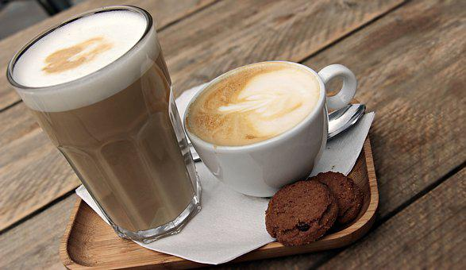
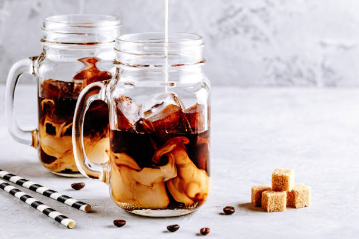
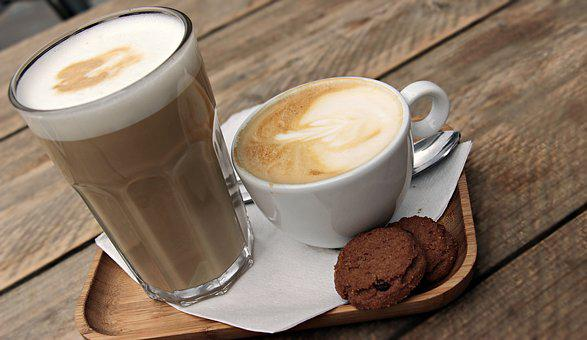
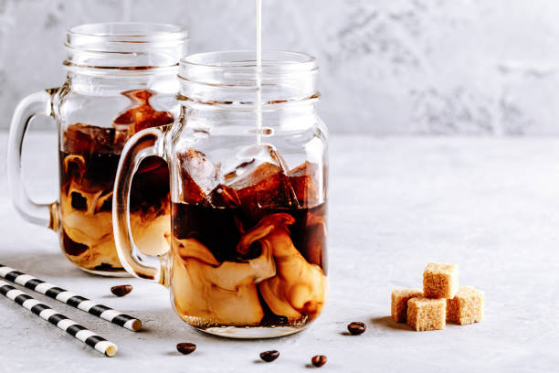

Secret to perfect Coffee
The secret is a perfect extraction, not too much, not too little.. right in the middle. The diamond-clad ratio for the most perfect cup of coffee is a ratio of 1 part coffee to 16 parts water. Whenever you add more coffee grounds than this, your basically just wasting expensive coffee. This isn't going to garner you a bigger caffeine buzz, nor a "stronger cup" of Joe. It will lead to extraction issues and flavor profile problems that no matter how much you've spent on that pound of black gold, will leave you regretting that purchase. Of course there are other contributing factors to why your coffee doesn't taste "perfect", such as water temperature, minerals in the water, grind size, brewing time, cleanliness of your machine. But the biggest factor in brewing the perfect cup of coffee is the coffee to water ratio. Follow for more coffee secrets